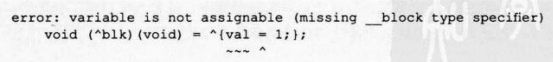
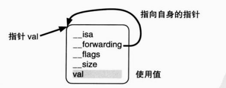
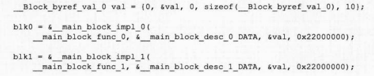

我们再来回顾前面截获自动变量值的例子。
^{Printf(fmt, val)}
该源代码转换结果如下:
static void __main_block_func_o(struct __main_block_impl_0* __cself){
const char *fmt = __cself->fmt:
int val = __cself->vali
printf(fmt, val);
}
看完转换后的源代码,有没有什么发现呢? Block中所使用的被截获自动变量就如“带有自 动变量值的匿名函数”所说,仅截获自动变量的值。 Block中使用自动变量后,在 Block的结构 体实例中重写该自动变量也不会改变原先截获的自动变量。 以下源代码试图改变 Block中的自动变量val
int val =0:
void (^blk)(void)=^{val =1;}
该源代码会产生以下编译错误:
如前所述,因为在实现上不能改写被截获自动变量的值,所以当编译器在编译过程中检出给 被截获自动变量赋值的操作时,便产生编译错误。 不过这样一来就无法在 Block中保存值了,极为不便 解决这个问题有两种方法。第一种:C语言中有一个变量,允许 Block改写值。具体如下:
虽然 Block语法的匿名函数部分简单地变换为了C语言函数,但从这个变换的函数中访问静 态全局变量/全局变量并没有任何改变,可直接使用。 但是静态变量的情况下,转换后的函数原本就设置在含有 Block语法的函数外,所以无法从 变量作用域访问。 我们来看看下面这段源代码。
int global_val =1;
static int static_global_val =2;
int main(){
static int static val = 3:
void (^blk)(void)=^{
global_val *= 1:
static_global_val *= 2:
static_val *= 3:
}
return o
}
该源代码使用了 Block改写静态变量 static_val、静态全局变量 static_global_val和全局变量 global_val。该源代码转换后如下:
int global_val = 1;
static int static global_val =2:
struct __main_block_impl_0{
struct __block_impl impl;
struct __main_block_desc_0* Desc:
int *static val;
__main_block_impl_0(void *fp, struct __main_block_desc_o *desc,
int static val, int flags=0): static val(_static_val){
impl.isa = &_NSConcreteStackBlock;
impl.Flags = flags;
impl.FuncPtr fp:
Desc = desc:
}
static void __main_block_func_0(struct __main_block_impl_0* __cself){
int *static val = __cself->static_val;
global_val *= l;
static_global_val *= 2;
(*static_val)*= 3:
}
static struct __main_block_desc_o{
unsigned long reserved;
unsigned long Block size
} __main_block_desc_0_DATA = {
0,
sizeof (struct __main_block_impl_0)
}
int main(){
static int static_val= 3:
blk = &__main_block_impl_0(
__main_block_func_0,& __main_block_desc_0_DATA, &static_val);
return 0:
}
}
这个结果是大家很熟悉的,对静态全局变量 static_global_val和全局变量 global_val的访问 与转换前完全相同。静态变量 static_val又要如何转换的呢?以下摘出 Block中使用该变量的 部分。
static void __main_block_func_o(struct __main_block_impl_0* __cself){
int *staticvval = __cself->static_val;
(*static_val)*= 3
}
使用静态变量 static_val的指针对其进行访问。将静态变量 static_val的指针传递给__main_block_impl_0结构体的构造函数并保存。这是超出作用域使用变量的最简单方法。 静态变量的这种方法似乎也适用于自动变量的访问。但是我们为什么没有这么做呢? 实际上,在由 Block语法生成的值 Block上,可以存有超过其变量作用域的被截获对象的自 动变量。变量作用域结束的同时,原来的自动变量被废弃,因此 Block中超过变量作用域而存在 的变量同静态变量一样,将不能通过指针访问原来的自动变量。这些在下节详细说明。 解决 Block中不能保存值这一问题的第二种方法是使用“ __block说明符”。更准确的表述 方式为“__block存储域类说明符”(__block storage-class-specifier)。C语言中有以下存储域类 说明符:
__block说明符类似于 static、auto和 register说明符,它们用于指定将变量值设置到哪个存 储域中。例如,auto表示作为自动变量存储在栈中, statIc表示作为静态变量存储在数据区中。 下面我们来实际使用 __block说明符,用它来指定 Block中想变更值的自动变量。我们在前 面编译错误的源代码的自动变量声明上追加__block说明符。
__block int val= 10:
void (^blk)(void)=^{val =l;}
该源代码可进行编译。变换后如下:
struct __Block_byref_val_0 {
void* __isa;
__Block_byref_val_0* __forwarding;
int __flags
int __size:
int __val:
}
struct __main_block_impl_0{
struct __block _impl impl;
struct __main_block_desc_0* Desc;
__Block_byref_val_0 *val
__main_block_impl_0(void *fp, struct __main_block_desc o *desc,
__Block_byref_val_0 *_val, int flags=0): _val( _val-> __forwarding){
impl.isa =& _NSConcreteStackBlock;
impl.Flags = flags;
impl.FuncPtr = fpi
Desc = desc
}
};
static void __main_block_func_o(struct __main_block_impl_0 *__cself){
__Block_byref_val_0 *val = __csefl->val;
(val-> __forwarding->val)=1;
}
static void __main_block_copy_0(
struct __main_block_impl_0*dst, struct __main_block_impl_o*src){
__Block_object_assign(&dst->val, src->val, BLOCK FIELD_IS_BYREF);
}
static void __main_block_dispose_o(struct __main_block_impl_0*src){
_Block_object_dispose(src->val, BLOCK_FIELD_IS_BYREF);
}
static struct_main_block_desc_0 I{
unsigned long reserved;
unsigned long Block size;
void (*copy)(struct __main_block_impl_0*, struct __main_block_impl_0*);
void (*dispose)(struct __main_block_impl_0*);
}__main_block_desc_0_DATA = {
0
sizeof (struct __main_block_impl_0),
__main_block_copy_0,
__main_block_dispose_o
}
int main(){
__Block_byref_val_o val ={
0,
& vall,
0,
sizeof(__Block_byref_val_0),
10
};
blk = &__main_block_impl_0(
__main_block_func_0,&__main_block_desc_0_DATA, &val, 0x22000000);
return 0;
}
只是在自动变量上附加了 __block说明符,源代码量就急剧增加。
__block int val = 10:
这个 __block变量val是怎样转换过来的呢?
__Block_byref_val_o val = {
0,
&val,
sizeof(_Block_byref_val_0),
10
};
我们发现,它竟然变为了结构体实例。__block变量也同Bock一样变成__Block_byref_val0 结构体类型的自动变量,即栈上生成的__Block_byref_val0结构体实例。该变量初始化为10,且这个值也出现在结构体实例的初始化中,这意味着该结构体持有相当于原自动变量的成员变量。 该结构体声明如下:
struct __Block_byref_val_0{
void* __isa:
__Block_byref_val_0* __forwarding;
int __flags
int __size:
int val:
};
如同初始化时的源代码,该结构体中最后的成员变量va是相当于原自动变量的成员变量, 我们从它的名称也能看出来这一点。 下面这段给 block变量赋值的代码又如何呢?
^{va1=1;}
该源代码转换如下:
static void __main_block_func_o(struct __main_block_impl 0* __cself){
void * __isa;
__Block_byref_val 0 *val = __cself->val;
(val-> __forwarding->val)= 1;
}
刚刚在 Block中向静态变量赋值时,使用了指向该静态变量的指针。而向 __block变量赋值 要比这个更为复杂。 Block的 __main_block_impl_0结构体实例持有指向__block变量的__Block_byref_val_0结构体实例的指针。 __Block_byref_val_0结构体实例的成员变量__forwarding持有指向该实例自身的指针。通过 成员变量__forwarding访问成员变量vl。(成员变量val是该实例自身持有的变量,它相当于原 自动变量。)如图25所示。
究竟为什么会有成员变量__forwarding呢?这个问题,我们留到下节详细说明。 另外, _block变量的__Block_byref_sval0结构体并不在 Block用 __main_blockvimpl_0结 构体中,这样做是为了在多个 Block中使用 __block变量。我们看一下下面的源代码。
__block int val =10;
void (^blk)(void)=^{val=0;}
void (^bll)(void)=^{val =1;}
Block类型变量bk0和blkl访问 __block变量val。我们把这两部分源代码的转换结果摘录 出来。
两个 Block都使用了 __Block_byref_val_0结构体实例val的指针。这样一来就可以从多个 Bock中使用同一个 __block变量。当然,反过来从一个Blck中使用多个__block变量也是可以 的。只要增加 Block的结构体成员变量与构造函数的参数,便可对应使用多个 block变量。 到此大概能够理解__block变量了。下节主要说明之前跳过部分的内容: